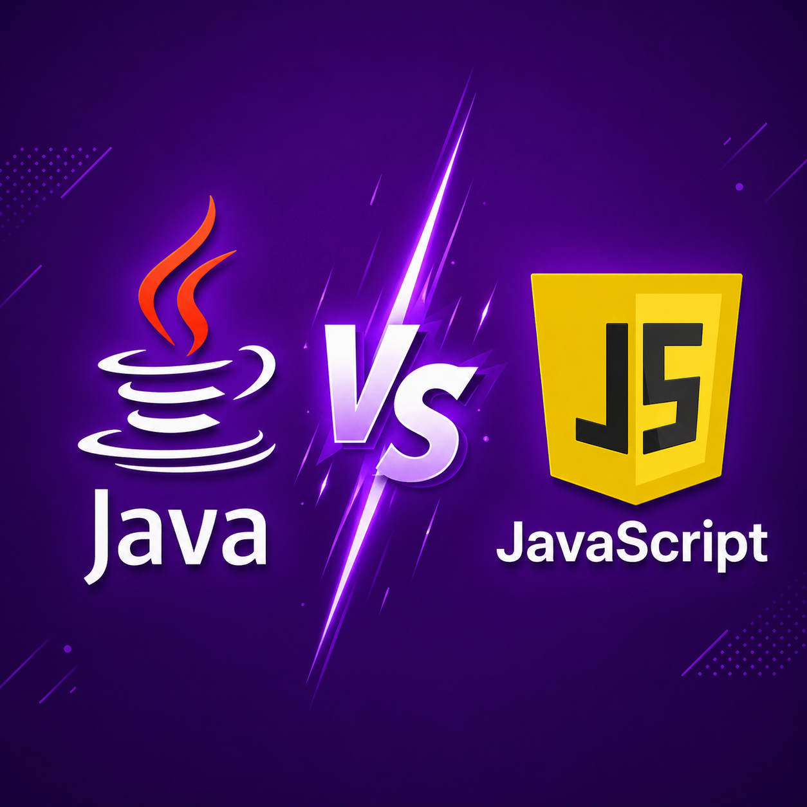

Java y JavaScript son dos lenguajes de programación que, a pesar de compartir parte de su nombre, son fundamentalmente diferentes en su diseño, propósito y uso. Java es un lenguaje de programación orientado a objetos desarrollado por Sun Microsystems (ahora propiedad de Oracle) en la década de 1990. Es conocido por su portabilidad, ya que el código Java puede ejecutarse en cualquier plataforma que tenga una máquina virtual Java (JVM). Java se utiliza ampliamente para desarrollar aplicaciones empresariales, aplicaciones móviles (Android) y aplicaciones web.
Por otro lado, JavaScript es un lenguaje de programación interpretado que se ejecuta principalmente en el navegador web. Fue creado por Netscape en 1995 y se ha convertido en uno de los lenguajes más populares para el desarrollo web. JavaScript se utiliza para crear interactividad en las páginas web, como animaciones, validación de formularios y manipulación del DOM (Document Object Model). A diferencia de Java, JavaScript es un lenguaje dinámico y no requiere una máquina virtual para ejecutarse.
En resumen, aunque Java y JavaScript comparten parte de su nombre, son lenguajes de programación distintos con diferentes propósitos y características. Java es un lenguaje orientado a objetos utilizado para aplicaciones empresariales y móviles, mientras que JavaScript es un lenguaje interpretado utilizado principalmente para el desarrollo web.